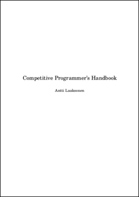

Reading 01: I/O, Sequence Containers

Everyone:
Next week, we will provide a brief overview of the course and then dive into reviewing performing basic I/O in C, C++, and Python. Next, we will refresh our understanding of algorithmic complexity before discussing sequence containers such as arrays, lists, stacks, and queues. While these are rather basic data structures, it is important to understand their properties and behavior, which we will take advantage of in Challenge 01, Challenge 02, and Challenge 03.
We will also discuss good coding style and the use of linters to analyze source code.
Reading¶
The readings for Monday, June 05 are
-
Competitive Programmer's Handbook
-
Chapter 1 Introduction
-
Chapter 2 Time Complexity
-
Chapter 4 Data Structures
-
Optional¶
If you are interested in knowing a little more about C++ auto loops,
then check out the following:
If you are interested in knowing how to utilize lists in Python as stacks and queues, the check out the following:
Quiz¶
Once you have done the readings, answer the following Reading 01 Quiz questions:
Python 3¶
Throughout the semester, we will be using Python 3 for a variety of
purposes. Because the student machines have an older version of Python 3
by default, you will need to add the following line to your ~/.bashrc file:
export PATH=/escnfs/home/pbui/pub/pkgsrc/bin:$PATH
You can then source this file to load that environment variable:
$ source ~/.bashrc
To check that Python 3 works, you can run the following:
$ python3 -V
Python 3.12.4
This will be necessary for the .scripts/check.py script in your
assignments repository.
To submit your answers, you will need create a answers.json or
answers.yaml file in the reading01 folder of your assignments
repository:
-
For this class, you must use a separate git branch for each assignment. This means that the work for each reading and challenge must be done in a separate branch. To create and checkout a new branch, you can do the following:
$ git switch master # Make sure we are in master branch $ git pull --rebase # Make sure we are up-to-date with github repository $ git checkout -b reading01 # Create reading01 branch and check it outOnce you do the above, you should see the following output for the git-branch command:
$ git branch master * reading01The
*indicates that we are currently on thereading01branch. -
You can either hand-write the
answersfile using your favorite text editor or you can use the online form to generate the JSON data.The
answers.jsongenerated using the online form may look like the following:{ "q1": [ "python", "perl", "ruby" ], "q2": [ "n2", "nf", "nlogn", "1", "n", "sqrtn", "logn" ], "q3": "n", "q4": "n" }To determine which symbols correspond to which response, take a look at the Reading 01 Quiz file.
To check your answers, you can use the provided
.scripts/check.pyscript:$ cd reading01 # Go into reading01 folder $ $EDITOR answers.json # Edit your answers.json file $ ../.scripts/check.py # Check reading01 Checking reading01 quiz ... Q1 0.14 Q2 0.14 Q3 0.00 Q4 0.00 Q5 0.00 Q6 0.00 Q7 0.00 Q8 0.00 Q9 0.00 Score 0.29 / 4.00 Status FailureThis script will send your
reading01/answers.jsonfile to dredd, which is the automated grading system. dredd will take your answers and return to you a score as shown above. Each reading is worth 4.0 points.Note: You may submit your quiz answers as many times as you want; dredd does not keep track of who submits what or how many times. It simply returns a score. -
Once you have your answers file, you need to add, commit the file, and push your commits to GitHub:
$ git add answers.json # Add answers.json to staging area $ git commit -m "Reading 01: Quiz" # Commit work $ git push -u origin reading01 # Push branch to GitHubNote: You may edit and commit changes to your branch as many times as you wish. Just make sure all of your work goes in the appropriate branch and then perform agit pushwhen you are done. -
When you are ready for your final submission, you need to create a pull request via the GitHub interface:
-
First, go to your repository's Branches page and then press the New pull request button for the appropriate branch:
-
Next, edit the pull request title to "Reading 01", write a comment if necessary, assign the pull request to the instructor and then press the "Create pull request" button.

-
Every commit on GitHub will automatically submit your quiz or code to dredd and the results of each run is displayed in the Checks tab of each commit as shown below:
-
Once you have made the pull request, the instructor or teaching assistant can verify your work and provide feedback via the discussion form inside the pull request. If necessary, you can update your submission by simply committing and pushing to the appropriate branch; the pull request will automatically be updated to match your latest work.
When all work is graded, the instructor will merge your branch and close the pull request.
Note: Please do not merge your own pull request. This makes it more difficult for the instructor to keep track of what needs to be graded.
Qualitative Feedback¶
The purpose of this workflow is to provide you with better feedback. Instead of simply determining if your work is correct, the instructor will attempt to provide you with more qualitative feedback such as whether or not you used good programming practices or if your code could be improved or organized better.
The hope is that this will help you grow as programmers and develop some taste :).